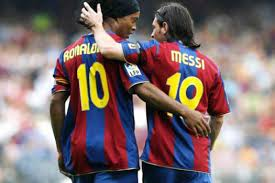

Lionel Messi é um dos maiores jogadores de futebol de todos os tempos e é indiscutivelmente o maior ícone da história do Barcelona. Nascido em Rosario, Argentina, em 24 de junho de 1987, Messi mudou-se para Barcelona quando tinha apenas 13 anos de idade para ingressar nas categorias de base do clube.
Em sua primeira temporada, Messi jogou pelo time juvenil do Barcelona e fez 36 gols em 30 jogos. Seu talento rapidamente chamou a atenção do treinador Frank Rijkaard, que o promoveu ao time principal na temporada 2004-2005. Messi marcou seu primeiro gol pelo time principal em maio de 2005, contra o Albacete.
A partir daí, Messi se estabeleceu como uma estrela em ascensão no futebol europeu. Ele formou uma parceria lendária com Ronaldinho Gaúcho, que lhe deu dicas e orientação para melhorar ainda mais seu jogo. Messi logo se tornou uma peça fundamental no time do Barcelona, ao lado de outros jogadores de classe mundial como Xavi, Iniesta e Puyol.
Messi foi fundamental em ajudar o Barcelona a conquistar muitos títulos importantes ao longo dos anos, incluindo dez títulos da La Liga, sete Copas del Rey e quatro Ligas dos Campeões da UEFA. Ele marcou mais de 700 gols em sua carreira pelo Barcelona e se tornou o maior artilheiro da história do clube.
Além disso, Messi também foi um líder carismático no Barcelona e um símbolo do orgulho catalão. Ele é considerado um dos maiores jogadores de todos os tempos e é adorado pelos fãs do Barcelona em todo o mundo.

No entanto, a história de Messi e o Barcelona não foi sempre fácil. Em 2020, Messi expressou publicamente sua insatisfação com a direção do clube e pediu para deixar a equipe. No entanto, após uma disputa legal, ele acabou ficando no Barcelona por mais uma temporada antes de se transferir para o Paris Saint-Germain em 2021.
Apesar do final conturbado de sua carreira no Barcelona, não há dúvida de que Messi sempre será lembrado como um dos maiores jogadores da história do clube. Sua técnica, habilidade e dedicação ao esporte inspiraram uma geração de jogadores de futebol em todo o mundo e seu legado será lembrado por muitos anos.